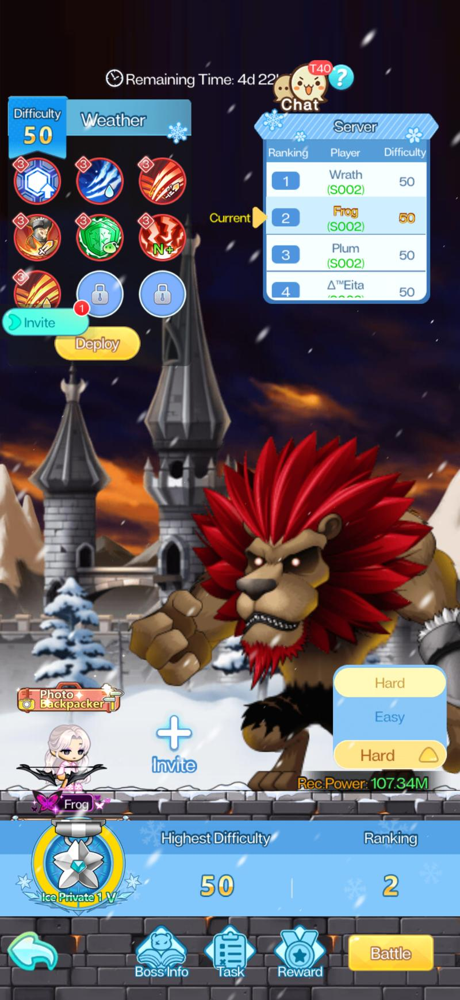
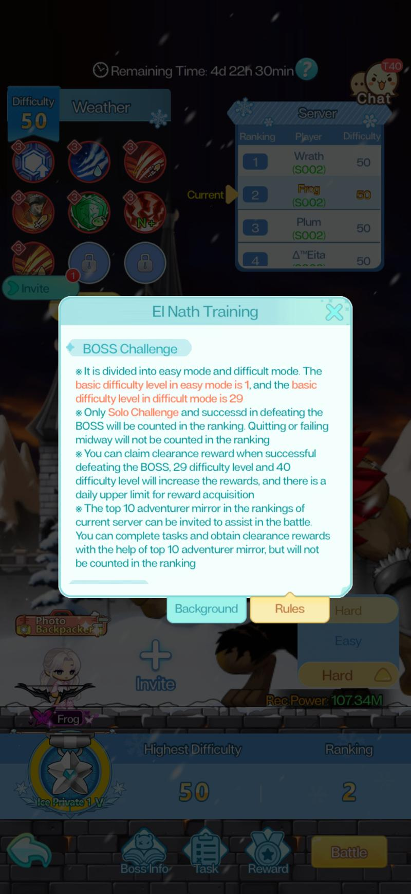
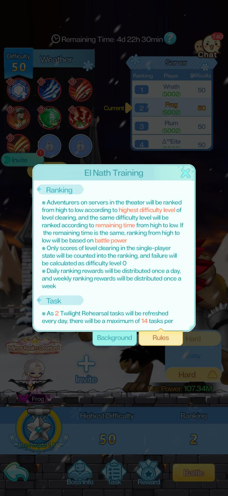
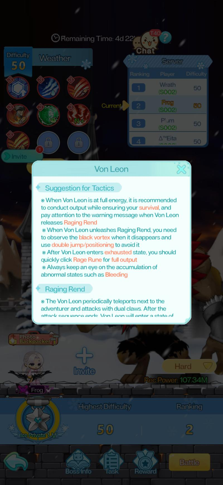
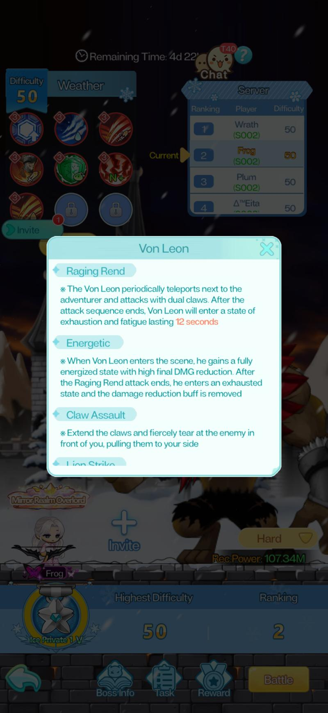
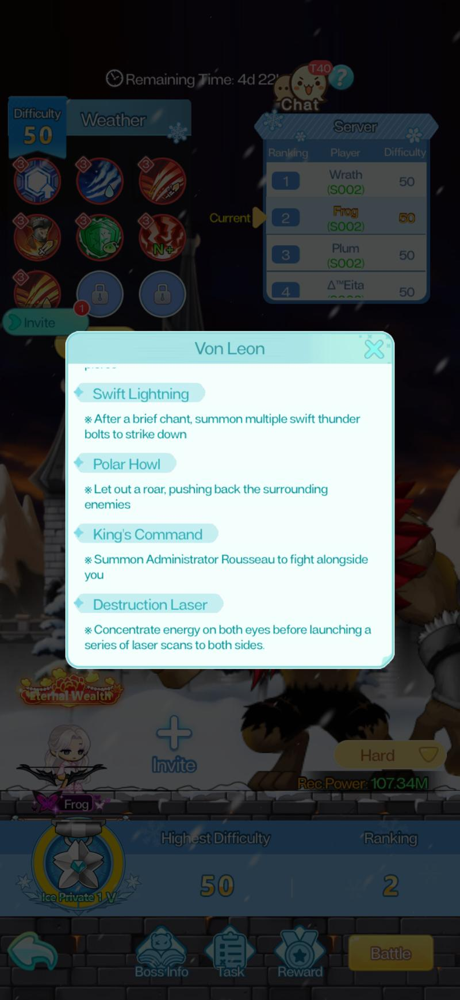

The Weather (Boss Challenge) event featuring Von Leon. How the difficulty and Weather system works, how ranking is decided, Von Leon's mechanics and when to burst, and how to extract full value from the weekly task track.
Source In-game UI · Server 0002 observation at D42Filed Jun 2026
El Nath Training is a weekly Boss Challenge event that runs under the Weather system. Unlike cultivation ranking events — which ask you to spend fragments — this event asks you to solo-clear a boss (Von Leon) at the highest difficulty level you can manage before time runs out. Ranking is purely based on how high a difficulty you cleared, then by how much time you had remaining when you cleared it.
CaveatFirst observed on Server 0002 at D42. This is a new event type with no prior reference data. All mechanics are sourced directly from in-game UI text. Verify current-cycle details before spending resources.
01Only solo clears count for ranking. Inviting a top-10 mirror ally helps with tasks, not rank.
02Von Leon's Raging Rend exhaustion window is 12 seconds — this is your primary burst window. Have Rage Rune ready.
03Ranked by highest difficulty cleared, then by remaining time. Clearing fast matters when tied on difficulty.
04Daily limit on clearance rewards. Daily ranking settled at 06:00 each day; full weekly reset every Monday 06:00.
05Clearance reward thresholds are difficulty 29 and difficulty 40. Apex difficulty unlocks after you max Hard mode weather selection.
El Nath Training runs on a strict weekly clock. The event lasts one week per cycle, with daily and weekly reward settlements both tied to 06:00 server time.

El Nath Training UI — Weather selection screen with Von Leon, difficulty 50 observed, and Theater ranking panel
When
What happens
Every day · 06:00
Daily ranking settled. Daily ranking reward from the previous day is distributed to qualifying players.
Every Monday · 05:55–06:05
Pre-settlement window. No challenges can be started during this 10-minute window. Plan around it — attempting a run right before weekly reset will be blocked.
Every Monday · 06:00
Weekly settlement. Ranking list is cleared. Weekly ranking rewards distributed to all qualifying players.
Daily cap
Clearance rewards (from defeating Von Leon at difficulty 29 and difficulty 40) have a daily upper limit. Once hit, further clears that day yield no clearance reward — but still count for ranking.
What "the Gameplay" actually is
You enter the El Nath snowfield, face Von Leon at a chosen difficulty level, and attempt to defeat him solo. Your highest successful difficulty within the week determines your ranking tier. You can attempt runs daily and improve your rank at any point before Monday 05:55 settlement. Unclaimed task rewards are mailed to your in-game mailbox after the next reset.
§ 02
Difficulty and the Weather system
How to push higher

Rules — Boss Challenge tab · Easy base D1, Hard base D29, solo clears only for ranking
You choose a Weather effect before each run. Weather effects are of varying difficulty — selecting a harder weather increases your challenge difficulty level. The higher the difficulty you clear, the better your ranking position.
Easy mode
1
Base difficulty level. Starting point for all players.
Hard mode
29
Base difficulty level in Hard. Where competitive ranking begins.
Apex (observed max)
50+
Unlocked after maxing Hard weather selection. No observed ceiling yet.
Weather selection strategy
Always select the hardest Weather effect you can reliably clear. A failed run — quitting or dying before Von Leon is defeated — gives zero ranking points and wastes the attempt. It is better to clear difficulty 35 consistently than to attempt difficulty 50 and fail.
Use your earlier runs in the week to calibrate. Start at the highest difficulty where you feel confident, then push one step higher if you succeed. The final day before Monday reset is the right time to make a risky attempt at maximum difficulty — you have already banked a ranking score.
Easy mode and ranking
Easy mode clears (difficulty 1–28) do count toward ranking if that is the highest difficulty you achieve. However, anyone running Hard mode will rank above any Easy mode clear regardless of remaining time. Easy mode is appropriate for learning Von Leon's mechanics before pushing Hard.
Apex difficulty
Once you reach the highest Weather selection available in Hard mode, Apex difficulty unlocks. Apex allows you to push beyond difficulty 50 — there is no observed ceiling in the current cycle. Apex is a late-cycle concern; focus on clearing Hard mode cleanly before trying to unlock it.
§ 03
Ranking rules
How your position is decided

Rules — Ranking tab · Sorted by highest difficulty, then remaining time; daily + weekly reward cadence
Understanding precisely how ranking works prevents two common errors: attempting runs with a mirror ally (which wastes ranking potential) and spending time farming extra clears when your rank is already locked in.
01
Solo clears only count for ranking
Runs where you invited a top-10 mirror ally are not counted in the ranking, even if you defeat Von Leon. Mirror ally runs can still complete tasks and grant clearance rewards — they simply do not affect rank. Do not use a mirror ally on your personal-best difficulty attempt.
02
Primary sort: highest difficulty cleared
All players within the Theater (server) are ranked from highest to lowest by the highest difficulty level they successfully cleared in solo play. A difficulty 40 clear always ranks above a difficulty 39 clear, regardless of time.
03
Tiebreaker: remaining time (higher is better)
When two players clear the same difficulty, the player with more time remaining when they defeated Von Leon ranks higher. This means clearing faster matters — use consumables, position aggressively, and burst during Von Leon's exhaustion window.
04
Failure counts as difficulty 0
Quitting or dying before Von Leon is defeated scores difficulty 0. It does not preserve your previous best. Your ranking score is always your best successful solo clear from the current week.
05
Top 10 players can be invited as mirror allies
Players ranked in the top 10 of your server's Theater can be invited by others to assist. This means strong players effectively help weaker players clear tasks. The top-10 player's own ranking is unaffected — the assisting run does not count for their rank either.
§ 04
Von Leon — mechanics and tactics
Abilities and how to handle them
Von Leon enters the fight in an Energetic state with high damage reduction active. The fight is structured around his Raging Rend cycle: bait the attack, wait for the exhaustion window, then burst. Understanding when damage reduction drops is the entire key to an efficient clear.
The core loop
Von Leon enters → high DMG reduction active (Energetic state) → performs Raging Rend → enters exhausted/fatigued state for 12 seconds (DMG reduction removed) → this is your burst window → activate Rage Rune immediately → deal maximum damage → repeat until dead.
Watch for the on-screen warning message when Raging Rend is about to release. Do not waste cooldowns during the Energetic state — the hit will land but at severely reduced value.

Von Leon — Tactics (1/2) · Raging Rend warning, black vortex positioning, exhaustion window and Rage Rune timing

Von Leon — Abilities (1/2) · Raging Rend 12s exhaustion, Energetic DMG reduction, Claw Assault pull
Raging Rend
Von Leon teleports next to you and attacks with dual claws. After the attack sequence ends, he enters exhaustion/fatigue lasting 12 seconds — damage reduction is removed during this window.
When Raging Rend initiates: watch for the black vortex. When the vortex disappears, use double jump to reposition and avoid the hit. After the sequence ends, activate Rage Rune immediately and burst.
Energetic
When Von Leon enters the scene he is in a fully energized state with high damage reduction. This persists until Raging Rend ends and he transitions to the exhausted state.
Do not use high-cooldown abilities or consumables during the Energetic state. Hold burst for the exhaustion window. Auto-attacks and low-cost abilities to maintain stacks are fine.
Claw Assault
Von Leon extends his claws and tears at the enemy in front, pulling you to his side.
A positional reset — reorient immediately after being pulled. No special survival action required; it is primarily a disruption.
Swift Lightning
After a brief chant, Von Leon summons multiple swift thunder bolts that strike down.
Keep moving during the chant animation. Lightning bolts follow a positional pattern — lateral movement is generally sufficient to avoid most hits.
Polar Howl
Von Leon lets out a roar that pushes surrounding enemies back.
Another positional reset. Close the distance quickly after being pushed back to stay within melee/short-range for Rage Rune timing.
King's Command
Von Leon summons Administrator Rousseau to fight alongside him.
Rousseau adds pressure but is not the primary target. Maintain focus on Von Leon — hitting Raging Rend windows matters more than clearing adds.
Destruction Laser
Von Leon concentrates energy in both eyes and launches a series of laser scans sweeping to both sides.
The sweep pattern covers both sides — vertical positioning (jump) or staying directly in front during the animation gap may reduce hits. Observed at higher difficulty levels.

Von Leon — Abilities (2/2) · Swift Lightning, Polar Howl pushback, King's Command (Rousseau summon), Destruction Laser sweep
Watch for Bleeding
The in-game tip explicitly calls out keeping an eye on abnormal states such as Bleeding. At higher difficulties, accumulated DoT from bleed can kill you during the Energetic state when you are otherwise waiting to burst. Have a cleanse or recovery available.
§ 05
Tasks, rewards, and Apex difficulty
What you earn and how
El Nath Training has three distinct reward tracks: clearance rewards (tied to specific difficulty thresholds), the daily/weekly ranking pool, and a weekly task track. All three run concurrently.
Clearance rewards
Awarded automatically upon defeating Von Leon at or above two difficulty thresholds. Both are subject to a daily upper limit — once hit for the day, further clears yield no additional clearance reward until 06:00 the next morning.
Threshold 1
29
Clearing at or above difficulty 29 awards clearance reward (Hard mode baseline).
Threshold 2
40
Clearing at or above difficulty 40 awards a higher clearance reward. Daily cap applies to both tiers.
2 Twilight Rehearsal tasks are added each day. Maximum of 14 tasks per week — if you miss a day, the cap is still 14 total (2 × 7), so early days are not lost.
Mirror allies
Completing tasks using a top-10 mirror ally counts toward task completion and clearance rewards. Useful for players who cannot clear threshold difficulties solo — invite a top-10 ally and complete tasks without needing a solo clear.
Task types
Both Twilight Rehearsal and Snowfield Training tasks contribute to the weekly reward pool. Complete both types to maximize earnings.
Unclaimed rewards
Any unclaimed task rewards at reset are automatically sent to your in-game mailbox. Check your mailbox after Monday 06:00 if you did not claim everything manually.
Apex difficulty unlocks after the highest-level Hard mode Weather selection has been reached. Once unlocked, Apex challenges have no observed difficulty ceiling — you can continue pushing to higher and higher levels each week. Apex is primarily relevant to top-ranked players competing on tiebreaker remaining time; for most players, consistently clearing the high-30s to 40s range in Hard mode is the practical target.
Ranking vs. rewards: different goals
Daily clearance rewards cap out once you hit the daily limit at difficulty 29 or 40. After that, further runs that day only serve ranking (improving your highest difficulty on record) or task completion. Do not grind extra clears expecting more clearance rewards — check whether your daily cap is already hit first.